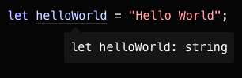

TypeScript offers all of JavaScript’s features, and an additional layer on top of these: TypeScript’s type system. For example, JavaScript provides language primitives like string and number, but it doesn’t check that you’ve consistently assigned these. TypeScript does.
Defining Types
JavaScript offers a large variety of design patterns, but some make difficult for the types to be determined automatically. By using an interface, it is possible to specify the types in an object, example:

To declare a JavaScript object that conforms to the shape of the interface would be